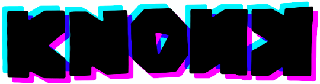

Knonk is a silent collective here to represent Bristol's wildlife population and speak what's on our mind. We believe we can all do things to make the world a little bit better, a bit more welcoming to different kinds of animals, a little more beautiful, cooperative, and real. We speak out from the walls, traffic signs and electicity boxes. This is our website.
This is a personal website project that is meant to grow and contain various opinions, art, comics, writing, photos and rants I've created over the years. It is under construction and always will be.
Click above for a review of 2025 in terms of the films I watched, loved, hated. As my coding skills get better I hope to track media I have an opinion about as I encounter it. This page will then take the place of my Goodreads and other tracker websites.
We're still building this space but here's a collection of links to other independent websites that we think are cool.
Paul Robert Lloyd wrote a Beginner's Guide to the Indie Web.
James has a List of ideas for a personal website.
Let's revisit melonland that seems like a cool place.
If you're into zines, you may be interested in this Collectible card game where you make your own cards, and then collect and trade by beating your opponent.
Or maybe you'd like to contribute to Recess Zine with some art or writing or other about your relationship with the outdoors.
Alert! Super cute zine to review your year! My 2025 Reflections and 2026 Aspirations by The Borderline literary magazine.